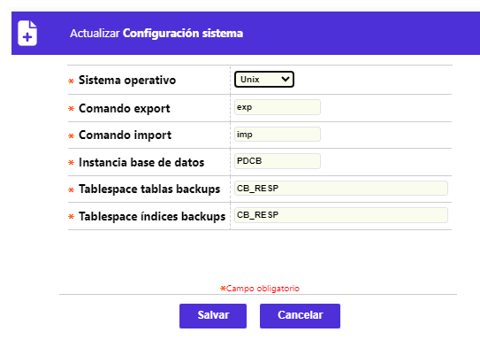

Configuración sistema
A través de esta pantalla se permite la consulta y mantenimiento de la tabla en la que se registran las características, básicamente técnicas, relacionadas con la manera en que se ha conformado el sistema operativo sobre el que funciona la base de datos. El formulario contiene los enlaces Actualizar y eliminar.

Actualizar: Al invocar ese enlace se despliega un formulario en el cual todos los campos son modificables:

|
Sistema operativo |
Campo que posee lista de valores adjunta de la cual es posible seleccionar entre Win.N.T, Unix u Otro, el sistema operativo sobre el que se interactúa con la base de datos correspondiente. |
|
Comando export |
En este campo se almacena el comando del motor de la base de datos utilizado para efectuar la funcionalidad que genera ,a manera de salidas del sistema, archivos tipo exports. |
|
Comando import |
Campo en el que se almacena el comando del motor de la base utilizado para efectuar la funcionalidad que integra los archivos tipo imports. |
|
Instancia base de datos |
Este campo identifica el SID (System Identification Database) de la base de datos asociada o utilizada por el Sistema OpenCard® cada vez que un usuario se conecta por medio del mismo. |
|
Tablespace tablas backups |
Campo en el que se registra el nombre que identifica el espacio reservado en la base de datos, en el que se almacenan ‘transitoriamente’ los backups hasta que dicho proceso es ejecutado nuevamente. |
|
Tablespace índices backups |
En este campo se registra el nombre que identifica el espacio reservado en la base de datos, en el que se ejecuta de manera lógica esta funcionalidad de la herramienta del motor de la base de datos, tendiente a optimizar la restauración de la información contenida en los backups. |